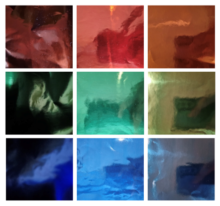
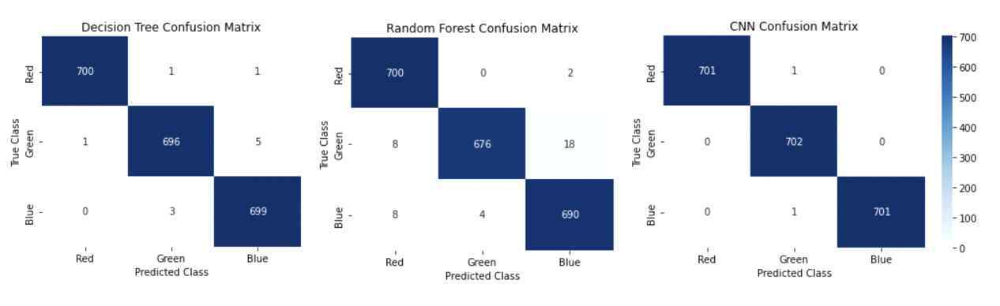
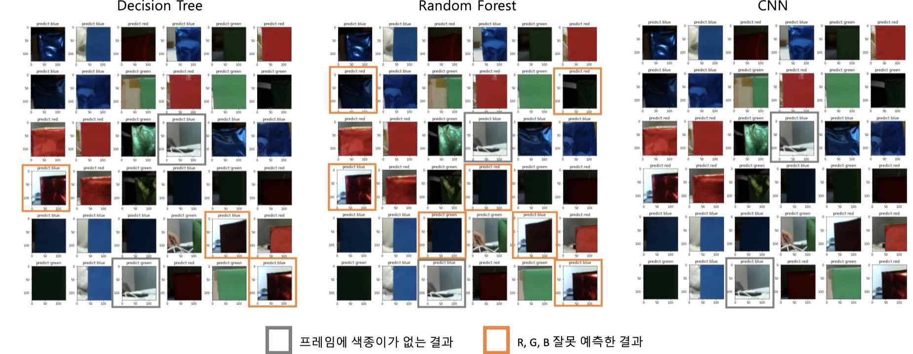
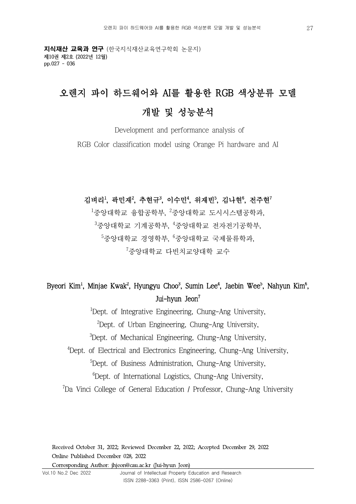

COMPUTER VISION, DATA QUALITY, MACHINE LEARNING
RGB color classification models on Orange Pi
The same RGB color is recorded differently by a camera depending on lighting, viewing angle and surface finish. We split capture conditions systematically, built a 21,054-image dataset, and compared Decision Tree, Random Forest and CNN on accuracy and input representation.
- Period
- 2022.09–2023.01
- Program
- Chung-Ang University Da Vinci Creative Credit Program
- Role
- Team lead; data collection criteria, dataset construction, model comparison
- Output
- Journal article in Korean, co-author 2 of 7

Capture conditions and data quality
Same color, different camera input
We collected data across lighting, angle and surface conditions, and compared the three models on the same test set.
01 / DATA DESIGN
Collection criteria that capture color variation
Using an Orange Pi and a camera, we defined data collection criteria for each capture condition: color, box angle, ambient lighting and surface finish.
02 / DATASET
A 21,054-image dataset
We split each 3024×3024 source image into 256×256 tiles, giving 7,018 images per color and 21,054 in total. Training and test data were split at roughly 9:1, and the models took the central 128×128×3 region as input.
03 / MODEL COMPARISON
Models compared on the same test set
All models used the same test images. Decision Tree and Random Forest took three RGB channel means as input; the CNN took the full 128×128×3 image.

| Model | Accuracy | ROC-AUC |
|---|---|---|
| Decision Tree | 99.48% | 0.9961 |
| Random Forest | 98.10% | 0.9858 |
| CNN | 99.91% | 0.9993 |
04 / FINDING
Two models misclassified the same photos

Only the mean of each channel was used; the spatial structure of the 128×128 image was discarded.
Spatial information and color distribution were both used.
We found photos that Decision Tree and Random Forest both misclassified. Since both models used only the RGB channel means, we concluded that an input representation without spatial information may be one of the causes.
05 / LIMITATION
No check for invalid input
All three models always output R, G or B, even when the colored paper was barely in the frame. High accuracy aside, a real system would need a step that decides whether the input is valid.
If I rebuilt it, I would add an Unknown or Reject class and hold back classification for low-confidence inputs.
06 / ROLE
My contribution
- Data designDefined data collection conditions
- DatasetPreprocessing and dataset construction
- Model comparisonTrained the three models and compared accuracy and input representations
- PublicationJournal article, co-author 2 of 7
07 / OUTPUT
Journal publication
